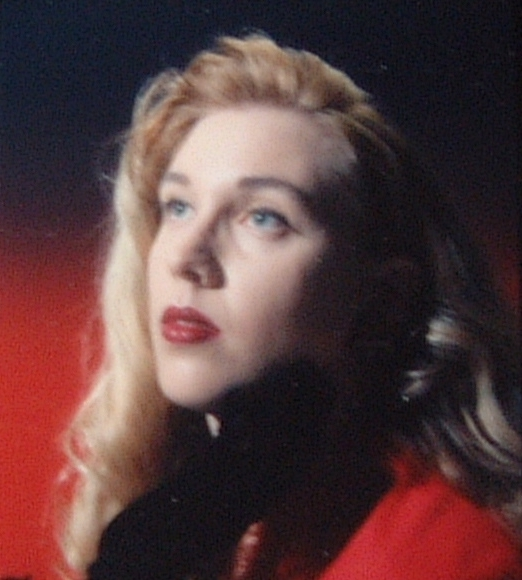
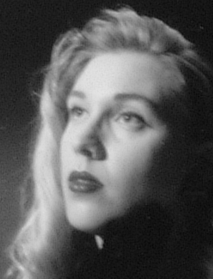
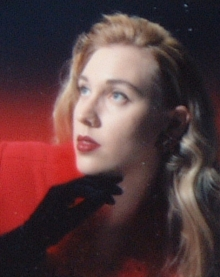
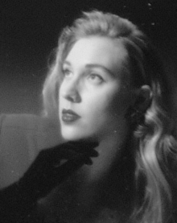
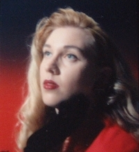
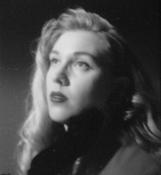
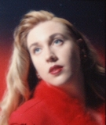

Portal | Kat Litter | Tales | Lectures | Eye Candy | Accreations | Kat Who? | Poke
posted: October 20, 2003
The following pics were taken by a professional about 7 years ago, in full make-up, just to prove that I can, indeed, be a glamourous '40s femme fatale (Veronica Lake is my hero.) All of these came from the proof-sheet of 1.75" x 2.25" contacts (4 to a strip) and were re-shot by me with the Fuji Finepix 4700. Macro mode and the wind, here, made focussing very difficult, so they are all out of focus and that makes it appear I have lipstick on my teeth, among other things. Only the first strip re-shot well, so there is no pic of me in the leopard stole or the Song-of-Bernadette-style drape over my head.

Fullsized so you can see that I do have green eyes, not blue. The green is pretty nice in the originals.

A little judicious cropping in B&W can salvage almost anything. The strange, black density under my jaw and and along my neck is my hand in a black velvet glove. Photographers working in Black & White should note that red is a very bad color to dress anyone in as it becomes either grey or gone when rendered into B&W. And never put a subject in front of a background the same color as their clothes without adjusting the lights. Watch how my shoulder disappears in a few of these....
Contrary to what Simon and Garfunkle had to say, some things really do look best in B&W. The photographer, however, hated my right side and took only one pic which showed it (in leopard stole), choosing to highlight the slight scar under my left eye, instead.
You'll also note some flaws on the pics which were caused by water-spotting and other degradation over time. Eventually, I'll get these scanned in properly and fix that, but for now, it's not worth it.






Back to top of this page, please.
Back to Gallery Index.
© 2003 M. Kathleen Huffine/Kat Richardson. All rights reserved.